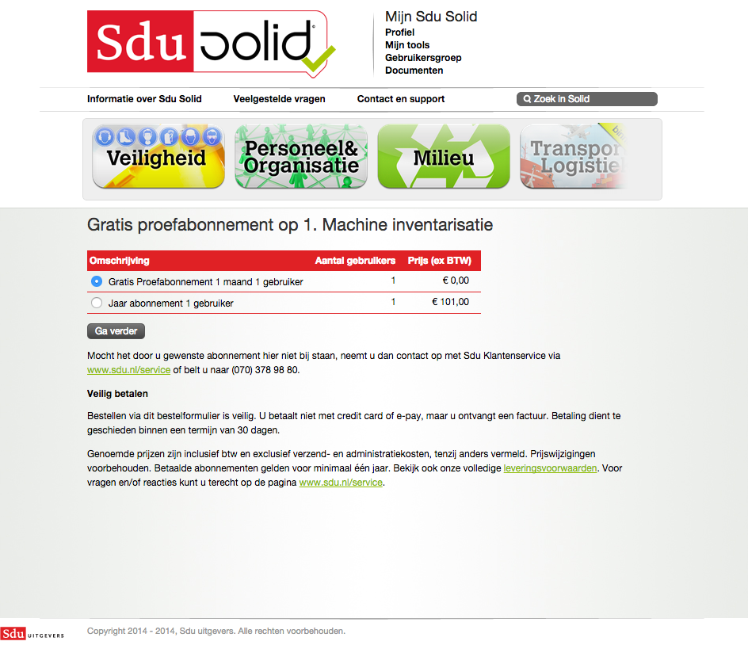
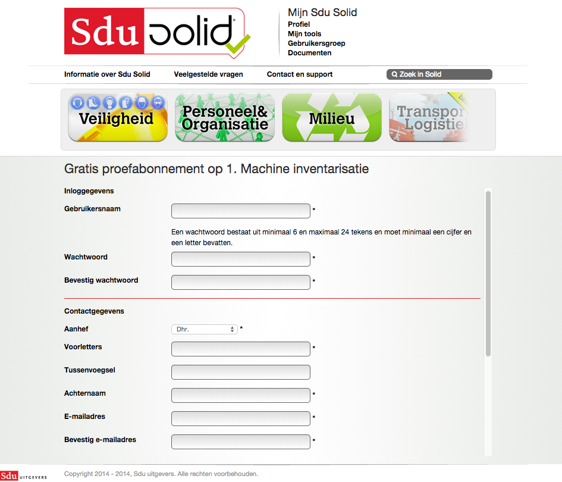
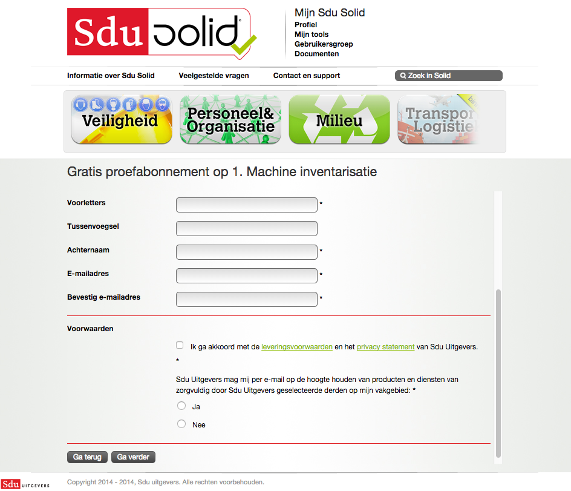

Home

Op de homepage gebeurt er een hoop. Alles op de homepage is:
- Header
- Navigatiebalk
- Tweede navigatiebalk
- Content
- Caroussel
- Welkomsttekst
- Eenvouding werken met SDU Solid + Registratieknop
- Klantenservice
- Voordelen van SDU Solid
- Caroussel
- Registreren 3 knoppen
Emotie gebruiker
Omdat er een hoop gebeurt op de homepage is Hans verbijsterd en redelijk in de war.
Hans gaat zichzelf vragen stellen, waardoor hij zichzelf afleid van het lezen van de tekst op de pagina. De vragen die hij zichzelf stelt zijn:
- Wat is die reclame-banner op de bovenkant van de pagina? Of is het onderdeel van de website? Laat ik er maar niet op klikken, want ik weet niet wat er gebeurd.
- Wat betekent eenvoudig compliant? Is Sdu Solid wel voor mij bedoeld, want ik snap het niet.
- Wat is SDU Solid nou precies? Ik snap het niet meer.
- Waarom zie ik “mijn profiel staan, ik heb toch nog geen account!?”
- Lees ik nou zo langzaam? Nee de slider verspringt gewoon heel snel. Oh laat maar, ik stop wel met lezen.
Er gebeurt zoveel dat de gebruiker vragen gaat stellen, waardoor de pagina niet kan overbrengen waarvoor het bedoeld is. Zodra een gebruiker vragen gaat stellen is hij namelijk de afgeleid en doet hij of zij niet meer wat hij daarvoor is gekomen om te doen.
Bron: Steve Krug - Don’t make me think (Revisited)
- Het is mogelijk dat het ‘Mijn Sdu Solid’ onderdeel niet duidelijk is voor de gebruikers. Het zou pas getoond moeten worden nadat er is ingelogt of als er een account is geregistreerd.
- Het is mogelijk dat gebruikers het ingewikkelde taalgebruik in de tekst niet begrijpen.
- De caroussel verplaatst zo snel dat de gebruikers de tekst niet kunnen lezen.
- De caroussel is mogelijk te groot, waardoor andere relevante tekst lager op de pagina komt.
- Het is mogelijk dat het gebrek aan witruimte in de content, de gebruikers afleid van het lezen van de verkooptekst.
- Het is mogelijk dat er te veel voordelen worden genoemd van Sdu Solid, waardoor gebruikers eerder afhaken met lezen.
- Het is mogelijk dat de gebruiker afhaakt met het bezoeken van Sdu Solid, omdat er te veel voor hen onduidelijk is.
http://uxmovement.com/navigation/why-users-arent-clicking-your-home-page-carousel/
Overhalen tot inschrijven

Content om potentiele klanten voor SDU Solid te laten kiezen. De emotie hoort bij de homepage en is daar beschreven.
Registreren

Hier kan er op een tool geklikt worden om direct een proefabonnement af te sluiten, in combinatie met de registratie bij SDU Solid.
Emotie gebruiker
Hans krijgt hier twee opties:
- registreren zonder proefabonnement.
- proefabonnement afsluiten.
Voor Hans is het onduidelijk wat het verschil precies is. Hij raakt daardoor verward. Hans heeft de volgende vragen:
- als ik mij nu registreer, kan ik dan daarna nog wel een proefabonnement afsluiten?
- wat gebeurd er als ik op proefabonnement klik? waar ga ik heen?
- wat houdt de tool precies in?
- Het verschil tussen ‘registreren’ en ‘neem proefabonnement’ is mogelijk niet duidelijk voor de gebruikers.
- Het is mogelijk niet duidelijk wat er gebeurt wanneer de gebruiker op een van de knoppen klikt.
- Het is mogelijk dat de gebruiker meer informatie nodig heeft, voordat hij zich op een tool abonneert.
Aangeven hoevel gebruikers er in het bedrijf zijn

Dit is een stap die verplicht is in verband met compabiliteit met Vista (intern CRM-systeem bij SDU).
Emotie gebruiker
Hans is geïrriteerd dat het aantal personen in een bedrijf ingevuld moet worden. Hoe moet hij dat nou weten?
- Het is mogelijk dat gebruikers afhaken omdat zij informatie moeten invullen waarover zij niet beschikken.
Verkoopkans (toch gelijk een jaar-abonnement afsluiten)

De potentiele klant kan hier kiezen voor een gratis proefabonnement of direct een betaald jaar-abonnement afsluiten.
Controle of er niet toch een account is

De potentiele klant wordt erop gewezen dat inlog-gegevens van andere producten van SDU ook werken bij SDU Solid. Vervolgens kan de klant ook een account aanmaken.
Formulier
 
Het formulier waarin het account wordt registreerd en/of een (proef)abonnement wordt afgesloten. De potentiele klant moet de voorwaarden accepteren. Na het invoeren van de gegevens komt de klant direct in de ingelogde versie van home.
Emotie gebruiker
De gebruiker is geirriteerd dat hij opnieuw zijn e-mailadres moet invullen. “Dat heb ik al eerder gedaan!”
Het formulier is erg lang dus de gebruikers verveeld zich en/of gaat nadenken of hij wel verder wil.
- Het is mogelijk dat het formulier te lang is, waardoor gebruikers af gaan haken.
- Het is mogelijk dat gebruikers gefrustreerd raken door het herhalen van invullen van informatie die zij al eerder hebben ingevuld.
Home (ingelogd)


 Op deze pagina ziet de gebruiker de subthema’s die onder het betreffende thema vallen.
Op deze pagina ziet de gebruiker de subthema’s die onder het betreffende thema vallen.  Op deze pagina ziet Hans de tools die bij het subthema horen.
Op deze pagina ziet Hans de tools die bij het subthema horen.  De gebruiker ziet een specifieke pagina van een tool en kan zich hier op de tool abonneren/de tool aanschaffen.
De gebruiker ziet een specifieke pagina van een tool en kan zich hier op de tool abonneren/de tool aanschaffen.  De gebruiker vult het aantal personen in de organisatie in.
De gebruiker vult het aantal personen in de organisatie in.  De gebruiker bevestigt dat het huidige ingelogde account de juiste is.
De gebruiker bevestigt dat het huidige ingelogde account de juiste is.